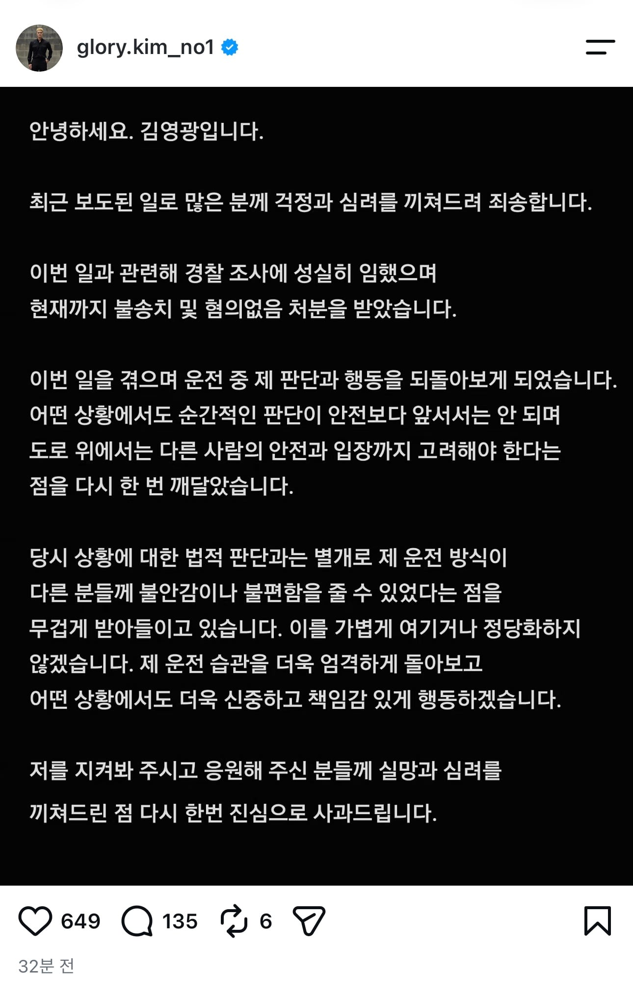
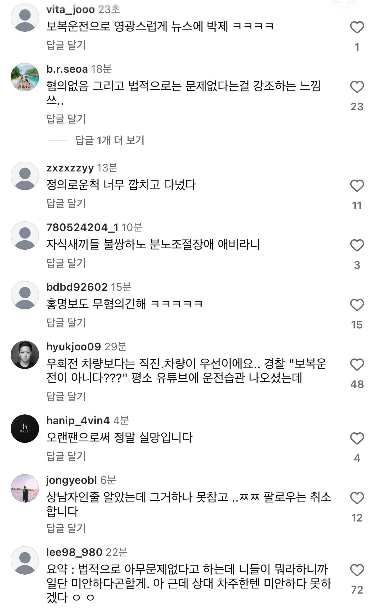
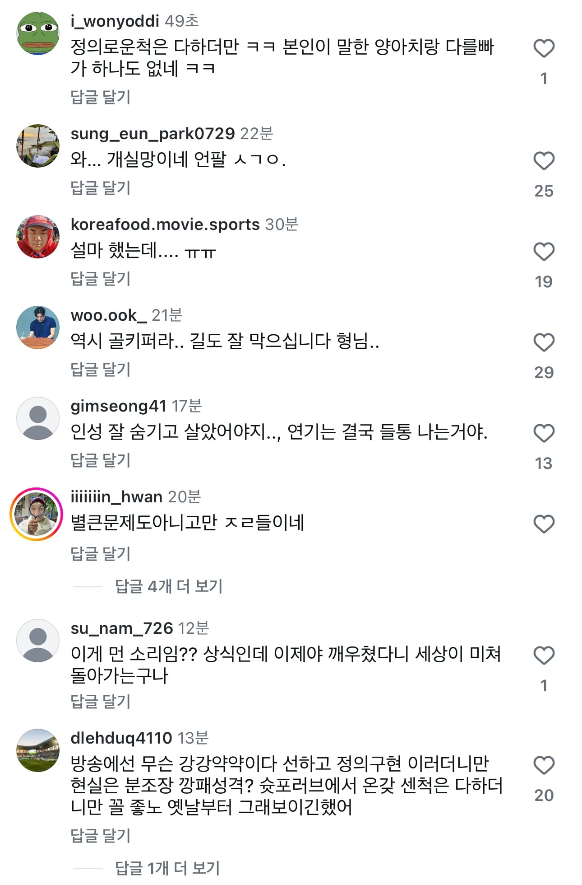
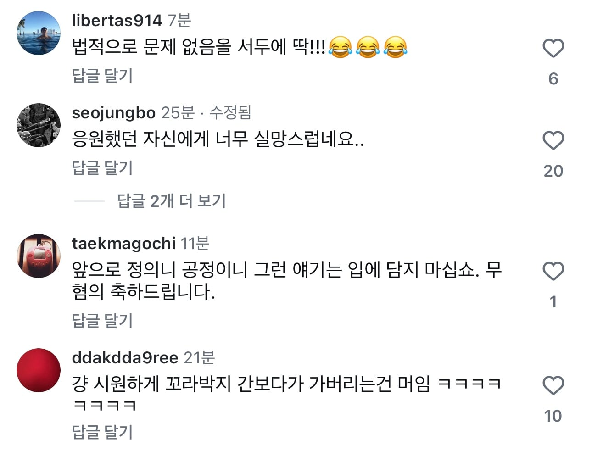

결국 해당 사건 인물은 김영광이 맞았고, 그에 대해 사과문을 게시했지만 사람들의 반응은 매우 좋지 않은 상황.
혹시 "무혐의인데 대체 뭐가 문제냐?" 라고 할 개붕이들이 있다면 내가 위에 올린 영상 제대로 다 보고 와서도 같은 생각이면 인정해 드림




결국 해당 사건 인물은 김영광이 맞았고, 그에 대해 사과문을 게시했지만 사람들의 반응은 매우 좋지 않은 상황.
혹시 "무혐의인데 대체 뭐가 문제냐?" 라고 할 개붕이들이 있다면 내가 위에 올린 영상 제대로 다 보고 와서도 같은 생각이면 인정해 드림
영광의 레이서
이런거보면 요즘 세태가 지저분해지기는 했어. 도덕적으로 개차반이어도 법적으로 문제만 없으면 그만이라는 식의 사고방식이 팽배해지는것같음
본인들이 사회적인 상식과 도덕에 의해 현재의 윤택한 삶을 유지하고 있다는 사실을 전혀 자각하지 못하는 지능인거지
개인주의를 넘어서 이기주의로 넘어가는 길목에 있는거 같다
끼어들면서 깜빡이도 안키네
진짜 축구하는 새끼들은 어째 상식이 없는 애들이 태반이냐.
공놀이가 생산성 있는 활동도아니고
매운거 이악물고 먹고 흥하더니 이런식으로 나락가네
"승부욕있다, 뜨겁다, 열정넘친다, 파이팅있다" 이러는 사람들을 조심해야하는 이유
승부해야할 상황에서만 그러는게아니고 내앞에끼어든다, 나한테 농담을 던진다 이런거까지 전부 자기를 이기려든다생각하고 들이받더라
지바겐이 약간 양카 이미지있네
몸에 문신하고 이상한 애들 많이 타고 다님
약간 ㄴㄴ
취재가 시작되자
짝짝짝짝짝 김영광 나가
쩝 좋게봤었는데
김영광이었어..????
해명글 보자마자 드는 생각이, 운동선수에 대한 편견만 깊어지는구나 싶음.
이새끼도 군대 안갔다왔네ㅋㅋㅋ
내 차가 훨씬 비싸고 좋은 차인데 겨우 택시가 나에게 양보하지않고 먼저 앞질러가기에 눈이 돌아버려 터널에서 죽여버리고 싶어 다른 차들은 눈에 보이지도 않고 그냥 들이댔습니다
라고 해야지
저기 좌회전 유턴하는 곳인데 우회전 합류하는 새끼들 중에 멈추는 새끼가 없음
꼭 저기 아니더라도 우회전 합류를 대가리 먼저 넣는 새끼가 우선하는거로 아는 새끼들이 너무 많음
넌 앞으로 차 타지 말고 그냥 뛰댕겨라 ㅋㅋㅋ
그냥 최대한 저자세로 갔어야지. 에휴
그냥 차선변경도 아니고 합류면은 직진차량 우선 아닌가? 거리가 먼 것도 아니고 택시뒤에 차가 없는것도 아닌데
왤케 화가났던걸까?
근데 경찰들 보복위협운전 존나 몸비틀어가며 적용안하려고함
형사처벌이라 너무 쌔서 그렇다는데
법 상 원칙이 진로변경, 신호위반, 과속 등 2회이상 위반하여 다른차량들에게 방해될 경우인데
그거 해당되는거 블박으로 신고해도 뭐 이 차는 다른차량에 방해가 안됐잖아요? 이러고
경찰이 판단하기에 같은행위로 2번만 한걸로 처벌할 수 없다 이지랄임
뭔 경찰 재량의 계도권이 헌법판례로 규정되어있다 이러는데
지금 계도권이 너무 풀어져있음 이것도 견찰이미지 만드는데 한몫하는데 견찰들만 모를거임
저건 보복운전을 경찰이 일하기 싫어서 몸비틀어가며 판단한거지
도로교통법으로 위반한건 맞음 저거에 왜 떳떳해 하는지도 모르겠고
저걸로 경고받고 떳떳하다고 생각하는 새끼 나왔으니까 이제 경찰의 계도장처리가 경고로써의 의미도 전혀 없다고 증거로 쓸 수 있겠다
잘 뛰니까 앞으로는 운전대 잡지 말고 뛰어다니는게 좋을듯